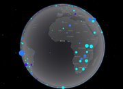
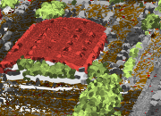
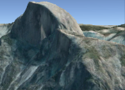
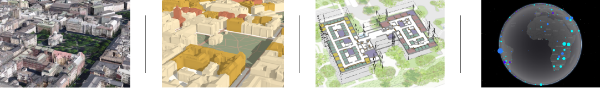

What are scene layers?
Scene layers are mainly used for displaying large amounts of 3D data in a scene. A scene layer can be one of five layer types: a point scene layer, a point cloud scene layer, a 3D object scene layer, a building scene layer or an integrated mesh scene layer.
In the JavaScript API scene layers have four different classes: SceneLayer, BuildingSceneLayer, PointCloudLayer and IntegratedMeshLayer. This distinction is necessary because each layer has a different API. Point scene layer and 3D Object scene layer both expose a feature based API, with very similar functionality. This is why they share the same SceneLayer class.
Below is a table with the corresponding classes and supported functionality in the API:
| Type of scene layer | API class | Supports renderers | Supports labeling | Supports querying | Supports popups | Samples |
|---|---|---|---|---|---|---|
| 3D Object scene layer | SceneLayer | yes (see renderers) | no | partially (see Query section of the SceneLayer class) | yes (see popupTemplate) | |
| Point scene layer | SceneLayer | yes (see renderers) | yes (see labelingInfo) | partially (see Query section of the SceneLayer class) | yes (see popupTemplate) |  |
| Building scene layer | BuildingSceneLayer | yes (see renderers) | no | no | yes (see popupTemplate) | |
| Point cloud scene layer | PointCloudLayer | yes (see supported renderers in PointCloudRenderer) | no | no | no |  |
| Integrated mesh scene layer | IntegratedMeshLayer | no | no | no | no |  |
Read more about the types of scene layers at the platform level in the ArcGIS Online and ArcGIS Pro documentation.
The specification for Indexed 3D Scene Layers can be accessed on Github.
Starting with ArcGIS API for JavaScript version 4.12, IntegratedMeshLayer and 3D Object SceneLayers published with the new version 1.7 Indexed 3D Scene Layer (I3S) specification load and display on average twice as fast. To experience this increased performance you can convert your existing SLPKs with the I3S Converter tool:
- Navigate to the I3S Github repository.
- Select the I3SConverter folder.
- Download i3s_converter.exe.
- After running the converter, a version 1.7 scene layer package is created.
Levels of detail for scene layers
To improve performance scene layers are usually rendered with several levels of detail. At larger scales (close to the ground) all the geometry is loaded and displayed. When zooming out much coarser representations of the geometry with fewer vertices and smaller textures are shown to still have good performance. In addition to that some features are also removed, a process usually referred to as feature thinning.
For point scene layers and point cloud layers feature thinning is applied, so at smaller scales points are removed from display.
Point and 3D Object scene layers
Point and 3D Object scene layers share the same API class: SceneLayer. In this article we write SceneLayer to refer to the Point and 3D Object SceneLayer API class and we write scene layer to refer to the platform level general concept of scene layers.
3D Object scene layers are mainly used for displaying 3D features like buildings and other elements of a city scene. We refer to this type of geometry as a 3D Object. You can use this type of layer for realistic views of a city or for data visualization.
Point scene layers are designed for displaying large amounts of point data, up to millions of points.

Publishing
A SceneLayer behaves just like the other layers, they can be styled with renderers, queried for attributes, but they have a more complicated internal logic. Every feature has a set of attributes that can be used to create visualizations or simply display the attributes in a popup for more information.
SceneLayers will have limited access to attributes depending on how they were published. Here is a breakdown on the two workflows for publishing these layers:
| Definition - a SceneLayer where attributes are only stored in the cache of the service. The user can configure which attributes will be stored in the cache. See ArcGIS Pro documentation for this configuration. In this case only loaded features have access to the attributes, so it's impossible to make queries on the whole dataset. This type of layer can be used for styling buildings or displaying information about features in the view. | Definition - a SceneLayer that besides having cached attributes, it is also connected to a feature layer where the attributes are stored. In this case the attributes configured for the cache will also appear in the associated feature layer. When publishing layers like this, all features have access to all attributes and complex queries on the layer are supported. |
Publishing:
| Publishing:
|
Where do attributes come from?
Renderers, visual variables, popups, labels, filters and queries retrieve attributes either from the cache or from the associated feature layer, depending on how layers are published. The following table summarizes this behavior.
| Renderers / Visual variables | Cache attributes are used. | Cache attributes are used. Any updates on the associated feature layer will not be applied to the renderers/visual variables. |
| Filter | Cache attributes are used. | Cache attributes are used. Any updates in the associated feature layer will not be applied to the filter. |
| Labels | Cache attributes are used. | Cache attributes are used. Any updates in the associated feature layer will not update the labels. |
| Popups | Cache attributes are displayed. | Attributes on the associated feature layer are displayed. |
| Layer query | Not possible. | Layer query gets results from attributes on the associated feature layer. |
| LayerView query | Query gets results from cache attributes for currently loaded features. | Query gets results from attributes on the associated feature layer if outFields is specified. Otherwise available attributes from the cache are returned. |
For details about each of these features, read the description of the SceneLayer class.
Tips and tricks
- How can I get statistics on attribute values?
You can use the smartMapping summaryStatistics method on the SceneLayer. If the layer doesn't have an associated feature layer, then statistics are only displayed for the features that are loaded in the view.
- How do I know what functionality my SceneLayer supports?
For each field you can use the getFieldUsageInfo() method to find out whether popups, labels, renderers or queries using that field are supported:
sceneLayer.then(function(){
// get information on whether `OBJECTID` is available for query:
console.log(sceneLayer.getFieldUsageInfo('OBJECTID'));
// the result shows that layer queries are not available for this field
// this means that either the associated feature layer is not available
// or that the field can't be found in the associated feature layer
/* Object {
supportsLabelingInfo: true,
supportsLayerQuery: false,
supportsPopupTemplate: true,
supportsRenderer: true
}*/
// query layer for features
sceneLayer.queryFeatures()
.then(function(result) {
console.log(result);
})
.catch(function(err) {
console.error(err)
});
// querying the layer will result in an error:
// message: "SceneLayer queries are not available without associated feature layer",
// name: "scenelayer:query-not-available",
});